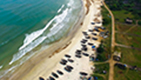
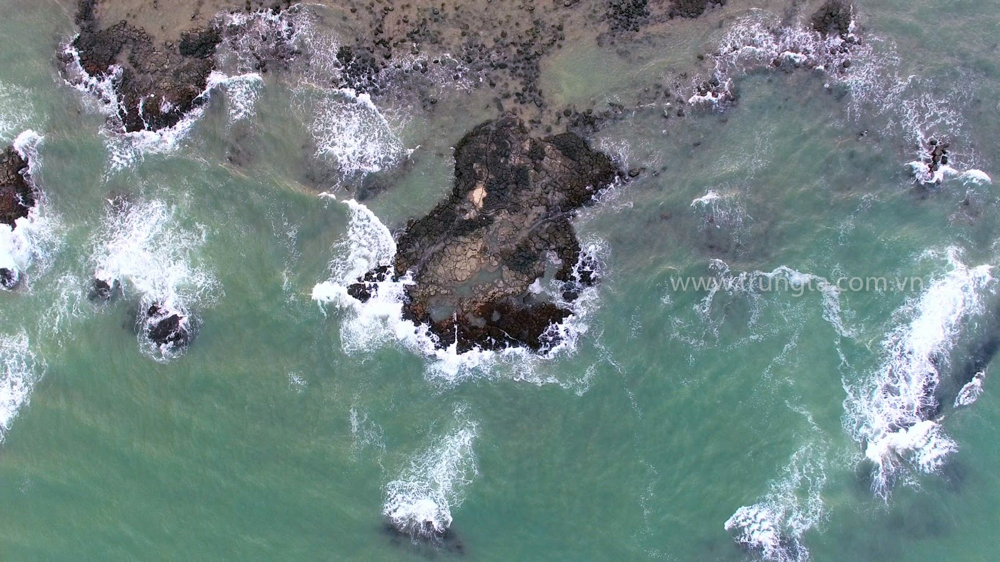

-

Bải biển phía tây
Mũi Trèo là nơi còn rất hoang sơ có độ cao từ 25 - 30m so với mặt biển, được bao bộc xung quanh một nửa là rừng và một nửa là biển. Hiện đây đang là một trong những điểm đến yêu thích của các bạn trẻ mê phượt và cắm trại. -
Hải Đăng Mũi Lay
Tọa lạc phía đầu mỏm hướng Đông Bắc của Mũi Lay với chiều cao toàn bộ là 37,9m. Được đưa vào sử dụng năm 1976, ngọn đèn này có tác dụng báo vị trí Mũi Lay, đèn ven biển và giúp tàu thuyền hoạt động trong vùng biển Quảng Bình - Quảng Trị định vị phương hướng -

Góc nhìn từ Hải Đăng Mũi Lay
à một mũi đá lấn ra biển khoảng 500m thuộc thôn Vịnh Mốc, xã Vĩnh Thạch trực thuộc Vĩnh Linh, cách Cửa Tùng khoảng 7km về phía Bắc. Mũi Lay được người dân trong vùng và người đi biển biết tới vì có ngọn đèn biển (hải đăng) Mũi Lay khá cao nằm trên đất liền. Người đi biển trong vùng lấy hải đăng Mũi Lay để định hướng cho chuyến đi biển của mình, đặc biệt trong những ngày sương mù và giông tố. -
Mũi Si
Những mỏm đá nối đuôi nhau rêu phủ xanh ngát, xa xa là những hàng phi lao rì rào…khung cảnh hoang sơ nhưng thật nên thơ. -
Đứng trên Mũi Trèo ta có thể nhìn xuống mới cảm nhận được vẻ đẹp hoang sơ của tạo hóa
Đứng đây sẽ nhận ra một điều là chúng ta đã bỏ lỡ khá nhiều thứ kì diệu của cuộc sống mà mẹ thiên nhiên đã ban tặng. Tránh xa với cuộc sống thời hiện đại tấp nập, xô bồ bạn sẽ phải ngạc nhiên với cảnh núi cao hùng vĩ bên dưới là đại dương mênh mông bất tận. Nhớ lưu giữ những khoảnh khắc tuyệt đẹp để làm “của để dành” thời tuổi trẻ nhé!